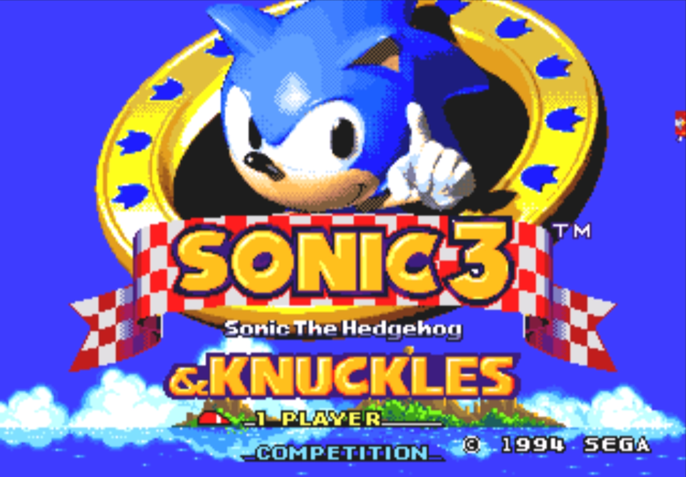

GERAÇÃO CLÁSSICA!
A primeira geração de jogos do Sonic, é reconhecida por possuir o melhor título da franquia de todos os tempos (Sonic The Hedgehog 2). É reconhecida muito pelo seu estilo de jogo focado em exploração da fase, que normalmente possui monitores de anéis, power-ups e afins espalhados pelas fases enquanto possui alguns picos extremos de velocidade e rush pelo meio da fase, seus principais jogos são:
Sonic The Hedgehog 1 ( 1991 )
O primeiro jogo da franquia, foi o debute de Sonic ao mundo dos jogos. Foi lançado em 1991, é considerado até hoje um dos melhores jogos da história por sua jogabilidade e efeitos visuais para época. Um fato curioso de se contar sobre este jogo, é que na verdade era para seu vilão (Dr. Robotnik) ser o herói, e Sonic ser o vilão.
Sonic The Hedgehog 2 ( 1992 )
O Segundo jogo de Sonic, lançado como continuação de seu antecessor, ficou muito conhecido pela introdução do personagem Miles "Tails" Prower, uma raposa macho melhor amigo de Sonic. Seu ano de lançamento foi em 1992, e ele é considerado até hoje o melhor jogo da franquia pela maioria dos fãs.
Sonic CD ( 1993 )
Terceiro jogo da franquia, foi lançado em 1993, ficou conhecido por ser produzido para o console SegaCD, além de ser o único jogo desta geração com a mecânica de viagem no tempo. Além disto ele introduziu os personagens Metal Sonic, vilão do game, e Amy Rose, a primeira personagem feminina da série.
Sonic The Hedgehog 3 ( 1994 )
Lançado como a sequência de Sonic 2, Sonic The Hedgehog 3 foi lançado em 1994, introduziu o personagem Knuckles The Echidna na série, além de introduzir os power-ups de Flame, Water e Thunder shields, que ficaram muito conhecidos e são usados até hoje em outros jogos do ouriço.
Sonic The Hedgehoog 3 & Knuckles ( 1994 )
Foi lançado como uma extensão de Sonic 3 em 1994, conta com novas fases, além de uma transformação nova chamada de Hyper Sonic. Ficou muito conhecido por possibilitar a jogabilidade com 3 personagens diferentes: Sonic, Tails e Knuckles.
Sonic 3D Blast ( 1996 )
Lançado em 1996, Sonic 3D Blast possuiu críticas bastante controversas a seu respeito, por se tratar da primeira tentativa da SEGA de introduzir o ouriço em 3D, apostaram em traduzir a mecânica e exploração com picos de velocidade extrema para o 3D, oque acabou não agradando todos seus fãs.
Sonic Mania ( 2017 )
Lançado em 2017, é na verdade um jogo que pode ser considerado da Geração Moderna pela seu ano de lançamento, porém sua jogabilidade, gráficos e tudo nele são da Geração Clássica. Sonic Mania é um jogo feito para relembrar os antigos games citados anteriormente nesta página, porém possuindo suas próprias novidades, como fases novas e até uma mecânica nova chamada de Drop Dash, o jogo foi extremamente bem recebido por todos os fãs, principalmente os mais antigos.